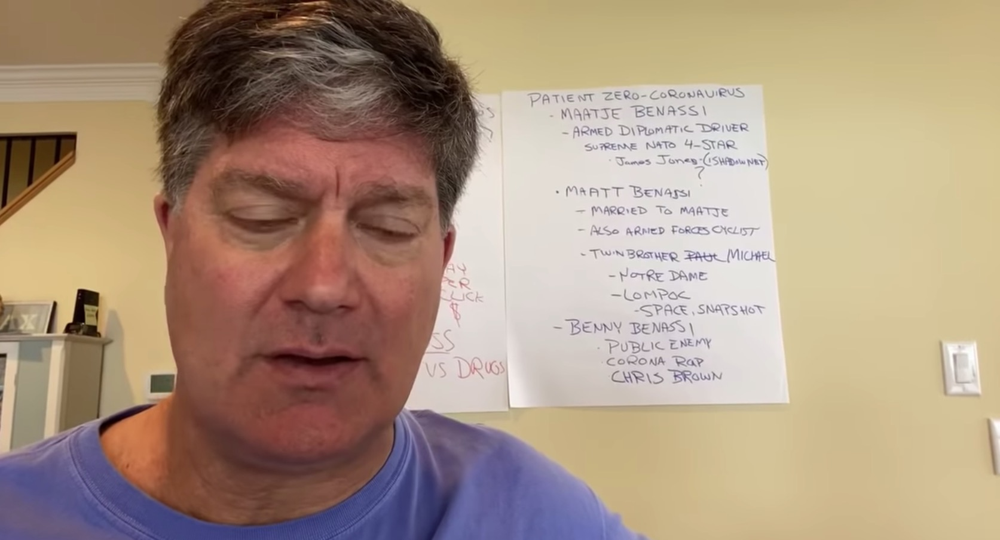

Well folks, you won’t believe what’s being pinned on cyclists now
I am off to do some YT research on Benny Benassi.Again.
Posted On: 2020-03-26T21:25:00
Posted By: Micky McFeverefan
It was a great video then.Still is now.
Posted On: 2020-03-26T21:44:00
Posted By: Alex M
I can't believe it wasn't posted as part of the story.
Posted On: 2020-03-27T07:14:00
Posted By: DaveRides
No.All incoherent disinformation.Easily fact-checked.
Posted On: 2020-03-28T01:12:00
Posted By: c.elizabeth
He was talking about the infamous
Satisfaction music video, not the conspiracy theories
Posted On: 2020-03-29T18:43:00
Posted By: DaveRides
unbelievable
Posted On: 2020-03-29T20:44:00
Posted By: Micky McFeverefan
from who?Webb?got news for you, I did fact check most of the things he mentioned and they checked out..I suppose he was making up the cyclist?
Posted On: 2020-03-30T08:34:00
Posted By: Michael Occhipinti
Webb is telling the hard core truth to the world !
Posted On: 2020-04-02T07:24:00
Posted By: Steve Chu
if there is no truth to the conspiracy theory, then why is the establishment getting so defensive.better question yet, why not release matje's medical records?
Posted On: 2020-03-29T20:20:00
Posted By: FADF FADF
right?
Posted On: 2020-03-30T08:34:00
Posted By: Michael Occhipinti
Park Tool should have done a rip of that.
It gets even better, Fountains of Wayne is in the suggested videos on the right.My sister had a friend named Stacy and that song was the bane of her life.
Posted On: 2020-03-27T07:29:00
Posted By: DaveRides
Cycling fans love a good conspiracy theory 😂
Posted On: 2020-03-26T21:27:00
Posted By: fabio
FFS
Posted On: 2020-03-26T22:18:00
Posted By: Dude pedalling
Unfortunately you can still type and tweet while wearing a tin foil hat and a dozen face masks.Perhaps we could start a rumour that oven mitts are essential protective equipment to thin out some of the contributors
Posted On: 2020-03-26T23:21:00
Posted By: lefthandside
Chinese propaganda machine is in full swing, trying to shift the blame.Don't let them.
Posted On: 2020-03-26T23:31:00
Posted By: kirakila
you sound xenophobic.you have no clue who's behind what.. but we have hints that STRONGLY point to the U.S. and the cabal that meets in the City Of London.
Posted On: 2020-03-30T08:36:00
Posted By: Michael Occhipinti
NONSENSE... there is NO STRONGLY pointed evidence that the US is linked to the CCP virus nor can you provide any... yet like this article points out... 'CHINESE PROPAGANDA MACHINE' is in full swing!
Posted On: 2020-04-17T18:55:00
Posted By: Lectori Salutem
Why give it air time?Didn't WW tell us just last week he's listening and we don't want this type of content?
Posted On: 2020-03-27T00:11:00
Posted By: krashdavage
This fits into that ‘weird and wacky’ category of news that we just can’t ignore for its absurdity.I think Iain’s tone gave it the treatment it deserves.
Posted On: 2020-03-27T00:30:00
Posted By: Wade Wallace
I blame the power tools.
Posted On: 2020-03-27T02:51:00
Posted By: Robert Merkel
,
#iwishthiswassarcasm
Posted On: 2020-03-27T03:33:00
Posted By: GH0STP1X3L
It seems likely that in this case, there’s another unintended consequence of the US’ weaponisation of language: the stirrings of a misinformation campaign from Chinese media attempting to pin the blame back on the accuser.(...jBefore getting too carried away with apportioning blame, perhaps the west could take a look at itself.The Spanish Flu, according to some historians, originated in Kansas.Ross River Virus originated in Queensland, Australia.Idealistic it may be, but in this moment it doesn’t matter where coronavirus came from.It’s here now, and the only way that we’re all going to get through this is by banding together, rather than splitting apart and throwing people – whether a single cyclist, or an entire country – under the bus in the interest of political point-scoring.
That first bit is nonsense.Chinese state media were already spreading disinformation about an American origin back when Trump was still in denial.
There is also nothing racist about naming a virus after the place where it first rose to prominence, as evidenced by your own examples.Throw in the Mexican flu, Hong Kong flu, and the West Nile virus and you've got examples from just about every continent.Wuhan virus would have been in line with historic naming convention and arguably clearer than using the generic name coronavirus.
Posted On: 2020-03-27T03:51:00
Posted By: Kniezebieter
All of those are historic examples.It hasn't been done that way in years... and for good reason as it stigmatises entire areas.
H1N1 wasn't called Kansas Flu for instance.
Posted On: 2020-03-27T04:06:00
Posted By: Textuality
It wasn't the entire area that tried to cover up the first signs because it looked bad on a resume.It wasn't an entire area that disappeared critics who pointed this out.It wasn't an entire area that has a culture of suppressing the truth and lying to its own people.Nor it is an entire area that has imprisoned millions of people with a different ethnicity and religion than the majority, or which has engaged in overt policies of cultural annihilation through forced resettlement and other programs and pogroms.It is the Chinese government.Maybe we could all be smart and realize that China (the geography) is an amazing place, and Chinese people are probably as good and bad as any other people on the planet, but the Chinese government is a bunch of sociopathic narcissists whose way of governing and initial handling of the virus has made Covid-19 into a much more catastrophic event than it might otherwise have been.Since when do facts 'stigmatize'?If somebody finds a fact stigmatizing, they probably shouldn't have done that thing in the first place.
Posted On: 2020-03-27T08:00:00
Posted By: badlogic
It wasn't the 'Chinese' who tried to cover things up.It was their government.Call it Xi's Disease.But 'Chinese' is neither useful (as the experts and scientists have given it a name, why not use that name?)nor terribly opaque.It's very clear why some people are stressing the 'Chinese' part.
Posted On: 2020-03-27T17:59:00
Posted By: TomJ
Fucking morons, the lot of you.Just go and repeat well proven fucking bullshit.When the United States 2009 H1N1 swine flu emerged, it eventually infected 60 million people in the US and killed a minimum of 18,449 cases worldwide that year.But the final story of the H1N1 global pandemic was far worse than that, with close to 300,000 deaths, according to the final tallies in 2012 reported by the United States Centers for Disease Control and Prevention.Which is why I am scratching my head at how bizarrely negative forces are attacking China and Chinese people as it engages a remarkably aggressive front addressing this Corona virus outbreak which started in Wuhan, central China.I am forced to ask and answer a few questions.During 2009 H1N1 outbreak, I don't recall xenophobic anti-America attacks across the globe, do you?In fact, do you recall it took six months for the U.S. to declare a national emergency?Did any government from the onset in April 2009 through the end in April 2010, including the month of June, when H1N1 was declared an international emergency global pandemic, then send out a notice to its citizens that they should leave the United States?Close their borders to American travelers?Nope, not a peep.
Like I said, something's not right, folks.I am reading hateful vicious attacks on the Chinese government for their supposed intentional conspiracy to intentionally under report the number of infections, yet that is exactly and always the case with such flu outbreaks no matter what country and the CDC reports illustrate that crystal clear.The U.S. H1N1 swine flu numbers were vastly underestimated and updated three years later, because dear friends, that is the nature of such viral outbreaks which don't care which country they started in.There is never enough man power, there are never enough test kits, there is never enough medicine or medical supplies.China is not trying to hide these hardships, they are well known, they are being reported on the news daily in China.There are always people who die, thousands of them whom we'll never know if they actually died because of a particular virus.Those are the facts, not any problem unique to China's healthcare system or government.
Its not a conspiracy, its just tragedy.https://www.linkedin.com/wu...
Posted On: 2020-03-29T00:18:00
Posted By: Munix
Well, thanks for that diatribe and for swearing at me.For the record, if you reread what I said, I'm not calling it a conspiracy.My problem with the Chinese government is that they were jailing and silencing the doctors who were reporting on this 'new disease'.And underlings in Xi's government were not passing the truth up the chain of command, because they were afraid for their own jobs as well.This all happened.It's not a 'conspiracy', it's a totalitarian state doing totalitarian things, things that had they not done them, would have helped dramatically.Xi didn't do it as some vast conspiracy to infect the world or something.He did it because he's a dictator, and that's what dictators do.And because Xi runs his government like he does, they missed their window to cut this thing off before other nations had to.And now other nations are doing things poorly as well.
So that's my beef with the Chinese government.Thank you once again for calling me, what was it, a 'fucking moron' for simply claiming that Xi had a lot of responsibility in all of this (not for claiming conspiracy, as I did not claim that).What do you call someone who calls someone else a moron after reading in all sorts of incorrect assumptions into their post?
You really are charming, showing off your intellect by being unable to engage in a discussion without trying to verbally abuse people.It really helps your arguments, really shows that *you* are the rational one.Good job.
Posted On: 2020-03-29T10:27:00
Posted By: TomJ
To be perfectly clear, I agree 100% with you.I am not advocating calling anything other than Covid-19.But I think we agree that calling it that shouldn't obfuscate the responsibility the Chinese government bear in its spread (as you detail quite clearly and simply below).In an era of untruthiness, remembering the facts and clearly articulating them is important.So thank you.
Posted On: 2020-03-29T12:03:00
Posted By: badlogic
Agreed, I was agreeing with you here :)
Posted On: 2020-03-29T14:10:00
Posted By: TomJ
The Chinese govt no doubt shares some responsibility, but claiming they fomented the virus is something else altogether different.
Posted On: 2020-03-30T08:39:00
Posted By: Michael Occhipinti
They didn't you fuckwit, they were investigating the first 7 patients, dickhead.They didn't hide anything, and announced the findings really quickly fuckwit, in record time to any other outbreak you fuck'n moron fact.Go fact check first you moron before spreading miss information.March 28, 2009 first case H5n1 child in southern california.No public mention for 3 weeks that's longer than n-Corona in China.The first school closed in 3 weeks the same time as China closing the Market.The virus was identified about 8 days later than China, the first confirmation was 2 days later than China, The epidemic centre was opened about 3 days later than China, and not much else happened, whereas China went into a huge response, and people cooperated.China was giving free treatment to flu symptoms, rolled out infrared sensors to airport, railway stations, coach stations and passenger terminals.While the US didn't really do anything, Time magazine saying it was too late to do anything anyway while Mexico began a massive lockdown, closing public spaces, stadiums, theatres and public spaces, their Army giving out face masks.The US was not really doing any action and the President says H1N1 'not a cause for alarm'.This lack of action causes the virus to spread to Canada, Spain, UK, the CDC declines shutting borders down ignoring potential to spread internationally, the reason 'it won't help less Americans get cases' what about the rest of the World you inconsiderate pricks.The US transportation secretary says 'It is safe to fly' encorouging people.The CDC suggests schools should re-open.
Posted On: 2020-03-29T00:17:00
Posted By: Munix
Time to shine a light: https://nationalpost.com/ne...
How much are you paid by that troll factory?
Posted On: 2020-03-29T07:10:00
Posted By: badlogic
zzzzzzz what a ridiculous rant (quoting ab-fab)
Posted On: 2020-03-30T08:38:00
Posted By: Michael Occhipinti
Exactly.As you indicate, those are OLD naming conventions.WNV was discovered in 1939.Lots of people called lots of things, and called lots of other people, a lot of things in 1939 that we don't think are acceptable now.
Posted On: 2020-03-27T18:02:00
Posted By: TomJ
H1N1 originated in Mexico... so why would it be called the Kansas Flu?
Posted On: 2020-04-17T18:56:00
Posted By: Lectori Salutem
Marburg, Hanta, and Tularemia are also good examples.
Posted On: 2020-03-27T10:15:00
Posted By: Joe Bond
right, there were lab accidents with all those pathogens
Posted On: 2020-03-30T08:39:00
Posted By: Michael Occhipinti
blah blah blah!!!incidental!evidence points to it coming from the U.S.!MANY countries, including Canada, had samples of coronaviruses that were having gain-of-function experiments performed on them.those are facts jack
Posted On: 2020-03-30T08:37:00
Posted By: Michael Occhipinti
Trying to beat USA with it's own propaganda weapon is a good idea for China but better work on the details required.
Posted On: 2020-03-27T06:27:00
Posted By: Alex Pal
The guy is now sitting on a trash talking gold mine: I'm going to attack the peloton here and wreck them like I wrecked the world economy.
Posted On: 2020-03-27T10:10:00
Posted By: Joe Bond
On behalf of my fellow Americans, I'd like to apologize to the world for our robust supply of conspiracy loons.Critical thinking isn't very fashionable here right now.
Posted On: 2020-03-27T11:20:00
Posted By: PsiSquared
This comment was marked as spam.
Chapeau, sir.Chapeau.That was brilliant.You win the internet for this month.
Posted On: 2020-03-29T11:43:00
Posted By: PsiSquared
The only thing Benny Benassi manufactured and carried around the world is a def bass drop and poppin mv!He's guilty of an infectious beat that makes you want to shake dat booty.
Posted On: 2020-03-27T13:19:00
Posted By: Cruz er
This theory will go far in the SF Bay Area, where many residents already associate cycling as Satan's work.
Posted On: 2020-03-27T15:49:00
Posted By: exemplary1
The guy may be a nutjob and immoral...but damn he makes a tasty 3am burger.Speaking from experience.
https:// georgewebb.com/
Posted On: 2020-03-27T16:38:00
Posted By: TomJ
As Carl Sagan said : 'Extraordinary claims require extraordinary evidence.'I'm definitely not a conspiracy theorist but ... On the other hand, it's not difficult to imagine the US government trying to economically or politically destabilize a foreign country.Only in the last few years they've done it in Venezuela, Bolivia, Brazil, Iran, Yemen ...Now, with China they cannot use the same methods due to the political structure and economic power of this country.A country wide pandemic is not such a bad idea, it's cheaper than bombs and certainly more efficient in this case with a very low potential of retaliations.Don't tell the US wouldn't do such a thing involving so many potential civil deaths in China.They don't have any problems when it involves bombs or sanctions.They don't even care about the health of there own people.It's more important to them to bailout private corporations than to stop the pandemic in the country and support their citizens.Now it could hypothetically be a wicked idea that went wrong.BTW, when it comes to propaganda, no countries beat the USA and their mainstream media.When I read some of the comments here, the mindset of some people are not far from this conspiracy theorist.They're willing to believe anything that suit their way of thinking.It's only the other way around when it comes to who are the good and the bad guys.But whatever the hypothesis, if your not providing sufficient proof then that's just that, an hypothesis.However, I'm quite sure many Americans wouldn't listen even if there were some disturbing facts requiring further investigation or wouldn't even believe it if it was proven.Just look at how many people reacted to the Lance Armstrong case.
BTW The title 'Well folks, you won’t believe what’s being pinned on cyclists now' is a cheap click bate.2nd These conspiracy theory is 'pinning it' on a US military who happens to be a competive cyclist.Stop the tribalism.It's not as bas as conspiracy theories but it's still bad 'journalism'.Because in the end, it's still an 'US VS THEM' point of view.
Posted On: 2020-03-27T16:50:00
Posted By: Krazyfrenchkanuck
lol.'I'm definitely not a conspiracy theorist but ...' |conspiracy theory|
Posted On: 2020-03-27T17:56:00
Posted By: TomJ
You're proving my point.People select the information that fits their narrative.And I presume your not a fan of Noam Chomsky.
Posted On: 2020-03-27T18:31:00
Posted By: Krazyfrenchkanuck
Noam was fine when he was a linguist, had some really innovative things to say about language acquisition.When he started not making sense I stopped paying much attention to him.
If your point is just that people have biases when they hear or read things...that gets a bit lost in your conspiracy mess above.But if that is in fact your point--okay.
Posted On: 2020-03-27T19:15:00
Posted By: TomJ

Content Date: n/a
Download Date: 2021-05-13
Document ID: L0C04C1RT